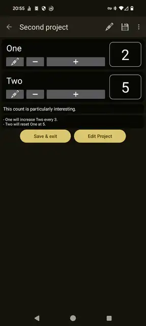

BeeCount Knitting Counter
قراءة وكتابة
A knitting project helper, with the following features: * Keep track of several knitting projects. * For each project, track several items which need counting, e.g. rows, pattern repeats etc * Allow counting up, down and re-setting to zero of these counts. * Allow editing of projects to add, remove
✓ ترخيص مفتوح (Apache-2.0) · آخر تحديث: 2026-04-19
2.7.6الإصدار
6.9 MBالحجم
Apache-2.0الرخصة
Open in Kanzتحميل APK (6.9 MB)
Download APK
SHA-256: ecd666bc0304b96bee542f5fc6cd5322095a7593d5935e1ff92235eb2b588c71

امسح الكود لفتح صفحة التطبيق
Scan to open this app page
لو كنز مش متثبت عندك: نزّل متجر كنز.
Not installed? Get the Kanz store.